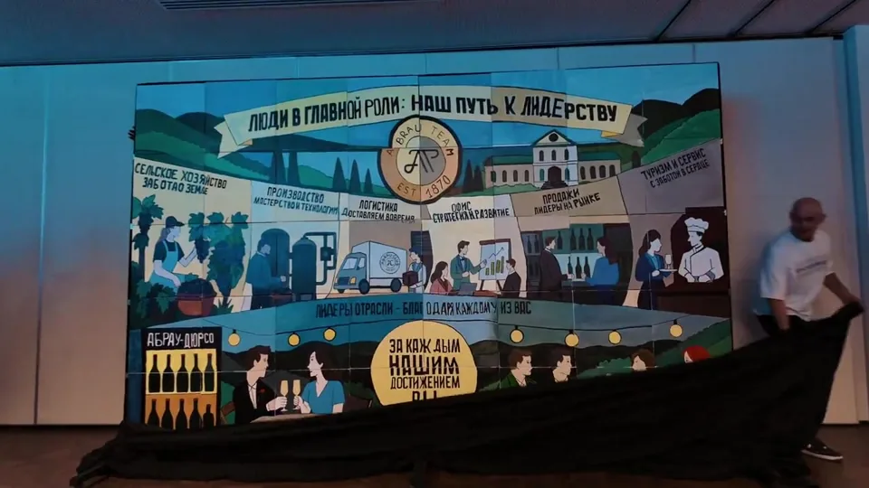

Что проверить в офисе
Начните с плана помещения. Отметьте на нём столы, места для ведущего и реквизита, проходы и точку, где кейтеринг будет ставить еду. Если фуршет и игра идут в одном помещении, проверьте, смогут ли гости подходить к столам, пока другие выполняют задание.
Пройдите маршрут от входа до места игры вместе с офис-менеджером. Уточните, куда привезти коробки с реквизитом, можно ли переставить мебель, где разрешено включать звук и когда коллеги освобождают переговорные. Если рядом люди ещё работают, игру с музыкой лучше перенести на время после окончания рабочего дня.
Как выбрать формат
Для знакомства отделов я выбираю игру, в которой участникам приходится договариваться. Если главная задача вечера в том, чтобы подвести итоги года и поблагодарить коллег, проще собрать всех за столами и дать командам общие вопросы.
| Помещение | Что провести | Что подготовить |
|---|---|---|
| Зал со столами | Квиз с раундом про события года | Рассадку команд, экран и бланки ответов. |
| Несколько переговорных | Станции с заданиями для небольших групп | Маршруты групп и ведущего для каждой станции. |
| Просторный зал | Корпоративная картина из фрагментов | Рабочие столы, защиту мебели и место для сборки полотна. |

На тимбилдинге для «Абрау-Дюрсо» 200 сотрудников из разных городов за три часа собрали полотно из 40 фрагментов. На стыке фрагментов команды согласовывали цвета и линии. Этот приём работает и за офисными столами, если сократить число фрагментов под размер команды.
Как встроить игру в вечер
Назначьте общий старт после сбора гостей. Если ведущий даёт задания за теми же столами, где будет ужин, заранее договоритесь с кейтерингом, когда освобождаете столы для игры и когда возвращаете сервировку. Награждение команды удобно поставить сразу после финала.
Если коллеги уходят и приходят в разное время, выбирайте станции, к которым можно присоединиться по ходу вечера. Если на игре важно собрать все отделы вместе, отведите ей отдельное время и укажите его в приглашении.
Коротко
- Подберите игру под мебель, свободное пространство и допустимый шум.
- Решите, чего ждёте от игры. Для знакомства перемешайте отделы, для подведения итогов добавьте вопросы о событиях года.
- Согласуйте время игры с офис-менеджером, ведущим и кейтерингом.
Частые вопросы
Какой тимбилдинг подойдёт для маленького офиса?
Выберите квиз за столами или игру по станциям. Для станций нужны отдельные зоны, между которыми гости смогут пройти без очередей.
Что провести, если коллеги плохо знакомы?
Смешайте отделы и начните с короткого задания, где можно участвовать без публичного выступления. Например, дайте каждой группе фрагмент общей картины и время договориться с соседней группой о цветах на стыке.
Как совместить игру и банкет?
Поставьте игру до основного ужина или выделите ей отдельный блок между подачами. Если гости будут работать за столами с реквизитом, договоритесь, когда кейтеринг освободит поверхность.